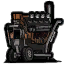

发电机是一台给 薇诺娜 机械供电的大型建筑
目前无法通过制作获得，也不会从任何生物身上掉落
放下时是一台空壳，血量只剩 1 点、电力为 0，需要玩家一点点修起来
修理：对发电机按住左键即可持续修理，每修一次同时恢复 1% 的血量与电力，每秒结算一次
修理时离开 3 单位距离以外会中断
薇诺娜亲自修理时效率提升 15%
身上带有冰冻值、催眠值或理智低于 30 点时效率降低 50%，两种减益可以叠加
多人同时修理时，效率为所有正在修理的人的总和
| 修理情况 | 效率 | 说明 |
|---|---|---|
| 薇诺娜亲自修理 | +15% | 工程师上手更快 |
| 身上带有冰冻值或催眠值 | −50% | 被冻住、被催眠时手会变慢 |
| 理智低于 30 点 | −50% | 戴梦魇护符／骨头头盔时同样算数 |
技能检定
累计修理满 8 ~ 15 秒之后，屏幕正中会弹出技能检定，弹出前会先响一声预警
指针开始转动（约 2 秒一圈），在指针进入判定区时按下指定按键即可
判定按键可以在 MOD 设置里的「发电机技能检定按键」选项中修改
按下时靠左的黑色部分算成功检定，靠右的白色区域算完美检定
失败后这台发电机会被锁住 4 秒，期间怎么修都不涨进度
检定失败还有机会招来麻烦：当季 BOSS（每个季节一次）或下一次猎犬袭击
| 判定结果 | 进度变化 | 说明 |
|---|---|---|
| 完美 | +5% | 额外恢复生命值与电力 |
| 成功 | ±0 | 无奖励/惩罚 |
| 失败 / 超时没按 | −5% | 当场爆炸 |
供电
发电机可以给周围的薇诺娜机械供电，每个用电器每秒消耗 1 点电力；机械待机时不算耗电
电力耗尽后机械会停工，需要重新修理才能继续供电
修满之后进入满电免耗期，10 天内供电完全不耗电，受到攻击会立刻解除
免耗期内发电机还会产生半径 11 单位距离的光芒
吸引仇恨
修理进度＞0%时，发电机会持续吸引半径11单位距离的生物仇恨
不会吸引猪人、兔人和石虾，也不会吸引已经有主人的随从
受伤机制
发电机单次受到伤害最多扣除 100 点生命，血量最低停在 1 点
受伤时会爆炸一次，对周围半径 4 范围内的生物造成 85 点伤害，不会伤到玩家与随从
WX-78 攻击发电机时会被电一下，并回复 1 格电荷
发电机

制作配方
目前无法制作
生命值：1000
可作业工具：
工作次数：4
掉落：石砖
不可燃烧
物品id：yuzu_generator